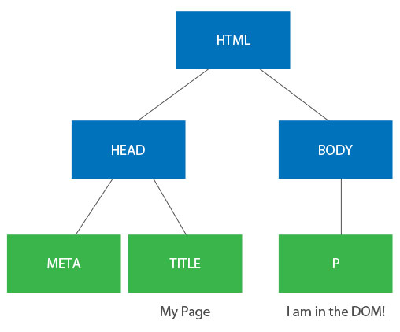

JavaScript
Enter The DOM
Preet Jassi / pjassi@ea.com
Origin Lunch And Learns
- HTML
- CSS
- JavaScript
- Enter The DOM
- ...
Agenda
- An Overview
- Traversing
- Adding / Removing
- Modifying Attributes
- Listening to Events
- Event Bubbling
Grab the code
You can view the code on github https://github.com/erudianart/ealunchandlearns/domandevents
What Is the DOM?
The DOM is the programming API used to manipulate HTML and XML documents.
DOM: An Overview
So What Happens?
- Browser recieves HTML document
- Browser parses it into both CCSOM and DOM tree
- Browser combines both to create rendering tree
- Browser displays rendering tree
Sooo What Is The DOM Tree?
<!DOCTYPE html>
<html lang="en-US" dir="ltr">
<head>
<meta charset="utf-8">
<title>My Page</title>
</head>
<body>
<p>I am in the DOM!</p>
</body>
</html>
Sooo What Is The DOM Tree?
Traversing
Get Elements In The Tree
var elm = document.getElementById('derp');
var lis = document.getElementsByTagName('li');
var boxes = document.getElementsByClassName('.my-boxes');
var boxLinks = document.querySelectorAll('.my-boxes > a');
Traverse The Tree
var elm = document.getElementById('derp');
for (var i=0; i < elm.childNodes.length; i++) {
console.log(elm.childNodes[i] === elm.childNodes[i].parentNode); // this will always be true
}
Traverse The Tree
var elm = document.getElementById('derp');
var elmsLis = elm.getElementsByTagName('li');
Adding Elements
Add A Node
var movies = document.getElementById('movies');
var twoTowers = document.createElement('li');
var twoTowersText = document.createTextNode('The Two Towers');
twoTowers.appendChild(twoTowersText);
movies.appendChild(newElm);
Oh No We Forgot About Dre!

Insert Before
//... previous code
// oh no we forgot about dre!
var fotr = document.createElement('li');
var fotrText = document.createTextNode('The Fellowship Of The Ring');
fotr.appendChild(fotrText);
movies.insertBefore(fotr, twoTowers);
Document Fragments
var elm = document.getElementById('derp');
var frag = document.createDocumentFragment();
var newElm = document.createElement('div');
var anotherElm = document.createElement('p');
frag.appendChild(newElm);
frag.appendChild(anotherElm);
elm.appendChild(frag);
Cloning Nodes
// this element takes the form
// <li><a><img></a></li>
var aPhoto = document.getElementsByClassName('.photo')[0];
var aNewPhoto = aPhoto.cloneNode(true);
var anotherPhoto = aPhoto.cloneNode(true);
aPhoto.parentNode.appendChild(aNewPhoto);
aPhoto.parentNode.appendChild(anotherPhoto);
Removing Elements
Removing Nodes
var elm = document.getElementById('derp');
elm.parentNode.removeChild(elm);
Modifying Attributes
Modifying Attributes
A DOM Node (A JavaScript Object) has the attributes defined in the markup, but it also has other attributes that you can modify on the fly. You can assign classes dynamically, assign id's dynamically, and more interestingly, alter the style of the node. These things will trigger a repaint - the DOM element will be recombined with the CSSOM to create a new rendering tree based on these new attributes.
Adding / Removing Classes
var elm = document.getElementById('body');
// old school (Big L)
elm.className = 'needs-to-workout';
elm.className = '';
// new school (Turn Down For What?)
if (elm.classList.contains('is-rather-healthy')) {
elm.classList.add('needs-to-go-running');
elm.classList.remove('is-rather-healthy');
}
Modifying The Style
var elm = document.getElementById('box');
elm.style.position = 'absolute';
elm.style.top = '10px';
elm.style.left = '20px';
Events
Events
So we can add elements, remove elements, style elements... thats all done. Now what?
Events
DOM Events allow us to create interactive pages by reacting to user's behaviour. You can say things like "when you click on this button, turn me blue" or "when you focus on this input, hide the label".
How To Listen To Events
var elm = document.getElementById('box');
elm.onclick = function() {
// do something
};
elm.addEventListener('click', function(e) {
// do something
}, false);
elm.attachEvent('onclick', function() {
// do something
var e = event;
});
Events Object
The events object passed as an argument contains information about that specific event.
function callback(e) {
var targ = e.target;
var keyCode = e.keyCode;
}
Preventing Default Behaviour
Browsers sometimes have default behaviours on certain actions. You can prevent these by using prevent default.
function callback(e) {
e.preventDefault();
return false;
}
var links = document.getElementsByTagName('a');
for (var i=0, j=links.length; i<j; i++) {
links[i].addEventListener('click', callback, false);
}
Removing Events
var elm = document.getElementById('box');
function callback(e) {
// do stuff
}
elm.addEventListener('click', callback, false);
elm.removeEventListener('click', callback);
elm.attachEvent('onclick', callback);
elm.detachEvent('onclick', callback);
Event Bubbling
Event Bubbling
Event Bubbling
When you click on the CTA, you are also clicking on the container that contains both the CTA and the image, and its container, and so forth.. and ultimately, you are clicking on the HTML document.
Event bubbling is precisely this, when an event bubbles up all the way to the root element.
Ok so, who cares?
Event bubbling can be a major pain in the ass at times. But more importantly, it can be the source of an extreme optimization.
Event Maps
Managing events can be a major pain, and can be really slow. Listen to the event once on the root, and then based on a data attribute, trigger some callback action.
Event Maps
var map = {
'hero-cta': makeUserBuy
};
function makeUserBuy() {}
function onviewevent(e) {
var targ = e.target,
trigger = targ.getAttribute('data-trigger');
if (trigger && map[trigger]) {
map[trigger]();
}
}
document.getElementsByTagName('html')[0]
.addEventListener('click', onviewevent, false);
Assignment
From the first assignment, write the markup that you created using entirely the DOM.